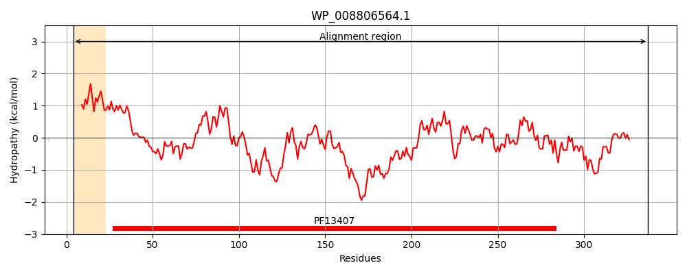
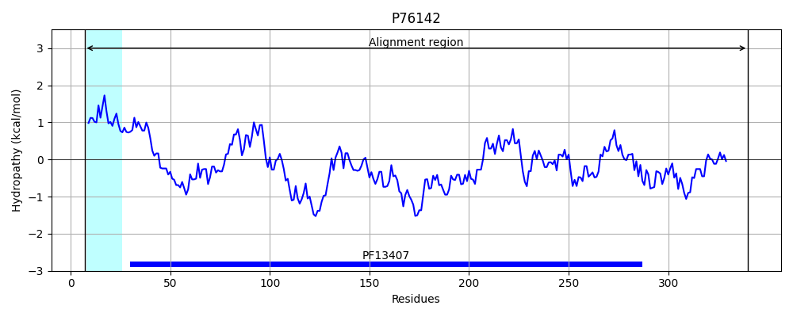
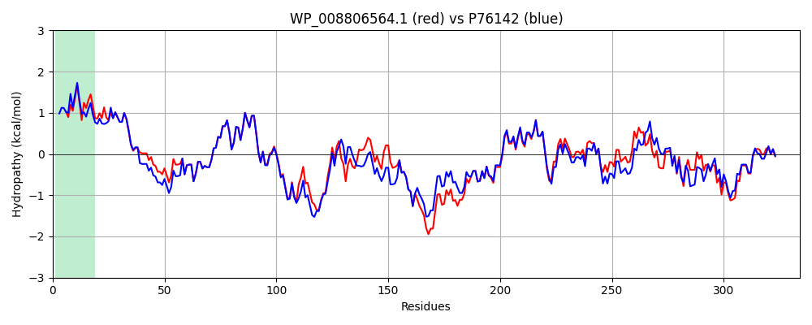

Hit Accession: P76142
Hit TCID: 3.A.1.2.8
Hit Description: gnl|BL_ORD_ID|11441 gnl|TC-DB|P76142|3.A.1.2.8 Hypothetical protein yneA precursor - Escherichia coli.
Mach Len: 334
e:0.000000
Query TMS Count : 1
Hit TMS Count: 1
TMS-Overlap Score: 0.950000
Predicted Substrates:CHEBI:40646;autoinducer-2
BLAST Alignment:
Score: 1441 , Bit scores: 559 bits, E-value: 0.0e+00, Alignment length: 334, Percentage identity: 83
Query: 4 KRILQVSALALAMSVVTAQAADRIAFIPKLVGVGFFTSGGNGAKEAGKALGVDVTYDGPTEPSVSGQVQLINNFVNQGYNAIIVSAVSPDGLCPALKRAMQRGVKVLTWDSDTKPECRSIYINQGTPQQLGGLLVEMAEKQVSKPAAKVAFFYSSPTVTDQNQWVKEAKAKIEKEHPQWQIVTTQFGYNDATKSLQTAEGILKAYPDLDAIIAPDANALPAAAQAAENLKRQGVAIVGFSTPNVMRPYVERGTVKAFGLWDVVQQGKIAVNVADRLLKKGDLNVGDSVEVKDIGSLKVEPNSVQGYQYEAKGNGIVLLPERVVFSKENINNYDF 337
K+I +SAL +A + QAA+RIAFIPKLVGVGFFTSGGNGA++AGK LGVDVTYDGPTEPSVSGQVQLINNFVNQGYNAIIVSAVSPDGLCPALKRAMQRGV+VLTWDSDTKPECRS YINQGTP QLGG+LV+MA +QV+K AKVAFFYSSPTVTDQNQWVKEAKAKI KEHP W+IVTTQFGYNDATKSLQTAEGILKAY DLDAIIAPDANALPAAAQAAENLK VAIVGFSTPNVMRPYVERGTVK FGLWDVVQQGKI+V VAD LLKKG + GD +++K +G ++V PNSVQGY YEA GNGIVLLPERV+F+KENI YDF
Sbjct: 7 KKIALLSALGIAAISMNVQAAERIAFIPKLVGVGFFTSGGNGAQQAGKELGVDVTYDGPTEPSVSGQVQLINNFVNQGYNAIIVSAVSPDGLCPALKRAMQRGVRVLTWDSDTKPECRSYYINQGTPAQLGGMLVDMAARQVNKDKAKVAFFYSSPTVTDQNQWVKEAKAKIAKEHPGWEIVTTQFGYNDATKSLQTAEGILKAYSDLDAIIAPDANALPAAAQAAENLKNDKVAIVGFSTPNVMRPYVERGTVKEFGLWDVVQQGKISVYVADALLKKGSMKTGDKLDIKGVGQVEVSPNSVQGYDYEADGNGIVLLPERVIFNKENIGKYDF 340 | Protein Hydropathy Plots: |
|---|
|  |  |
Pairwise Alignment-Hydropathy Plot:
|
|---|
|  |